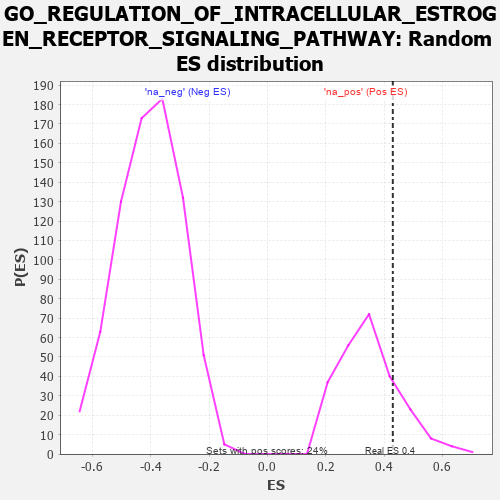

| | | Dataset | 7d |
| Phenotype | NoPhenotypeAvailable |
| Upregulated in class | na_pos |
| GeneSet | GO_REGULATION_OF_INTRACELLULAR_ESTROGEN_RECEPTOR_SIGNALING_PATHWAY |
| Enrichment Score (ES) | 0.42986748 |
| Normalized Enrichment Score (NES) | 1.2329602 |
| Nominal p-value | 0.186722 |
| FDR q-value | 0.45869738 |
| FWER p-Value | 1.0 |
Table: GSEA Results Summary
 Fig 1: Enrichment plot: GO_REGULATION_OF_INTRACELLULAR_ESTROGEN_RECEPTOR_SIGNALING_PATHWAY
Fig 1: Enrichment plot: GO_REGULATION_OF_INTRACELLULAR_ESTROGEN_RECEPTOR_SIGNALING_PATHWAY
Profile of the Running ES Score & Positions of GeneSet Members on the Rank Ordered List
| PROBE | GENE SYMBOL | GENE_TITLE | RANK IN GENE LIST | RANK METRIC SCORE | RUNNING ES | CORE ENRICHMENT | | 1 | AXIN1 | | | 166 | 1.159 | 0.1187 | Yes |
| 2 | UFSP2 | | | 230 | 0.981 | 0.2289 | Yes |
| 3 | CNOT2 | | | 514 | 0.625 | 0.2685 | Yes |
| 4 | UBA5 | | | 982 | 0.488 | 0.2685 | Yes |
| 5 | YAP1 | | | 1041 | 0.475 | 0.3185 | Yes |
| 6 | SRC | | | 1128 | 0.459 | 0.3629 | Yes |
| 7 | KCTD6 | | | 1213 | 0.444 | 0.4058 | Yes |
| 8 | CARM1 | | | 1413 | 0.408 | 0.4299 | Yes |
| 9 | PHB2 | | | 2712 | 0.197 | 0.2904 | No |
| 10 | UFL1 | | | 3041 | 0.144 | 0.2664 | No |
| 11 | MED1 | | | 3405 | 0.089 | 0.2314 | No |
| 12 | CNOT1 | | | 3473 | 0.081 | 0.2327 | No |
| 13 | UFM1 | | | 3506 | 0.077 | 0.2379 | No |
| 14 | PARP1 | | | 4014 | -0.010 | 0.1754 | No |
| 15 | WBP2 | | | 4780 | -0.153 | 0.0976 | No |
| 16 | LATS1 | | | 5412 | -0.298 | 0.0541 | No |
| 17 | STRN3 | | | 5849 | -0.417 | 0.0496 | No |
| 18 | PAK1 | | | 6691 | -0.757 | 0.0349 | No |
| 19 | AR | | | 7169 | -1.046 | 0.1008 | No |
Table: GSEA details [plain text format]

Fig 2: GO_REGULATION_OF_INTRACELLULAR_ESTROGEN_RECEPTOR_SIGNALING_PATHWAY: Random ES distribution
Gene set null distribution of ES for GO_REGULATION_OF_INTRACELLULAR_ESTROGEN_RECEPTOR_SIGNALING_PATHWAY